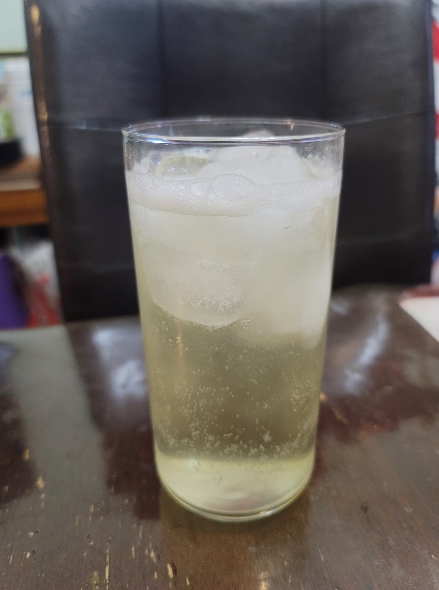

Lemon Lime Soda

Ingredients:
- 1 Lemon
- 1 Lime
- 4 cups Water, nonchlorinated
- 1/2 cup Sugar
- 1/4 tsp Salt
- 1/4 cup Ginger bug
Instructions:
- Add to a pot the water, sugar, salt, and the zests of the lemon and lime. Bring to a boil while stirring to dissolve the sugar. Once it boils reduce the heat to low, cover, and let simmer for 5 minutes.
- Remove from heat and let cool completely to room temperature. Any warmer will kill the ginger bug. Stir in the ginger bug and then strain into flip-top bottles. Let ferment at room temperature for 3-7 days, or until carbonated to preference, burping regularly. Then transfer to a fridge to chill. Serve cold over ice.